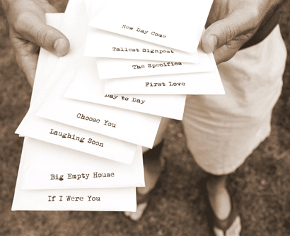

BIG EMPTY HOUSE is a collection of ten tunes about life by singer-songwriter Dan Hislop, shaped by Andy White and sweetened by other musicians. The songs have been brewing a long time - 10 years in fact! Back then a single, childless hopeful penned the first song for this album - a playful description of a bride and would-be groom called, "If I Were You". The suitor offers this advice to the woman of his dreams:
If I were you
I'd look for a guy with a sense of humor
One who's quick and fun, and really smart
And doesn't remember anything
If I were you
I'd look for a guy who is drop dead gorgeous
In the face and in the heart
And if you don't find him, well tell me cause...
I'll marry you.
And now 10 years, 1 wife, 3 children, and 17,520 diaper changes later, the songwriter is decidedly NOT quick, only occasionally fun, and STILL doesn't remember anything! But he does love all kinds of music, and especially the joy of finding a thoughtful truth or shared emotion buried within a well-written song. Perhaps that's why he loves the songs of Paul Simon, David Wilcox, Matt Redman, or Mary Chapin Carpenter. It's a great pleasure to now have some of his own to share with you, so "If I were you" I'd pour a warm cup, find a soft chair, and have a listen.
|
 |